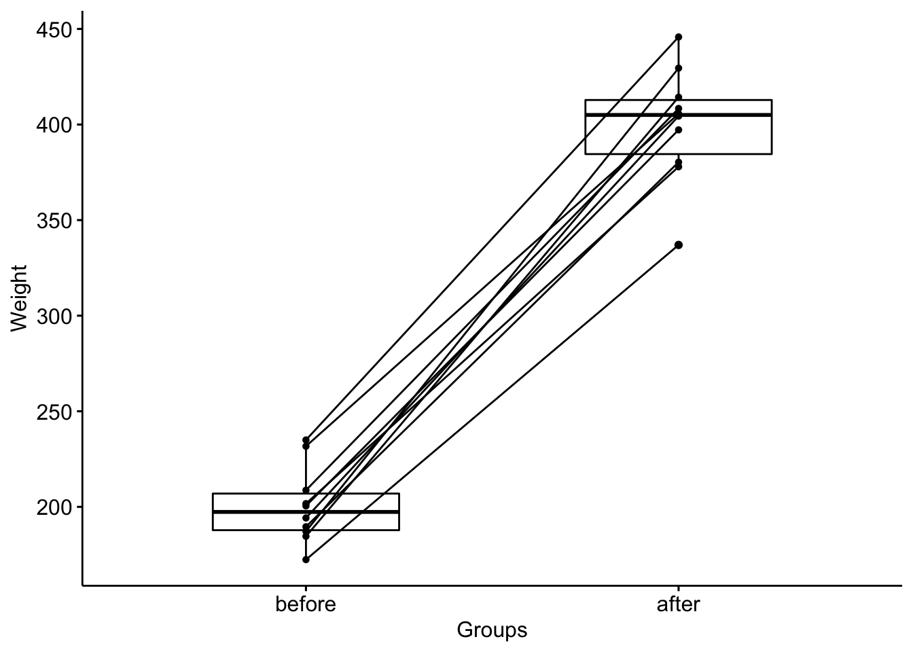
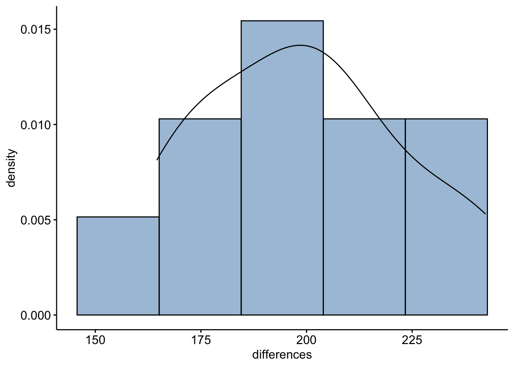
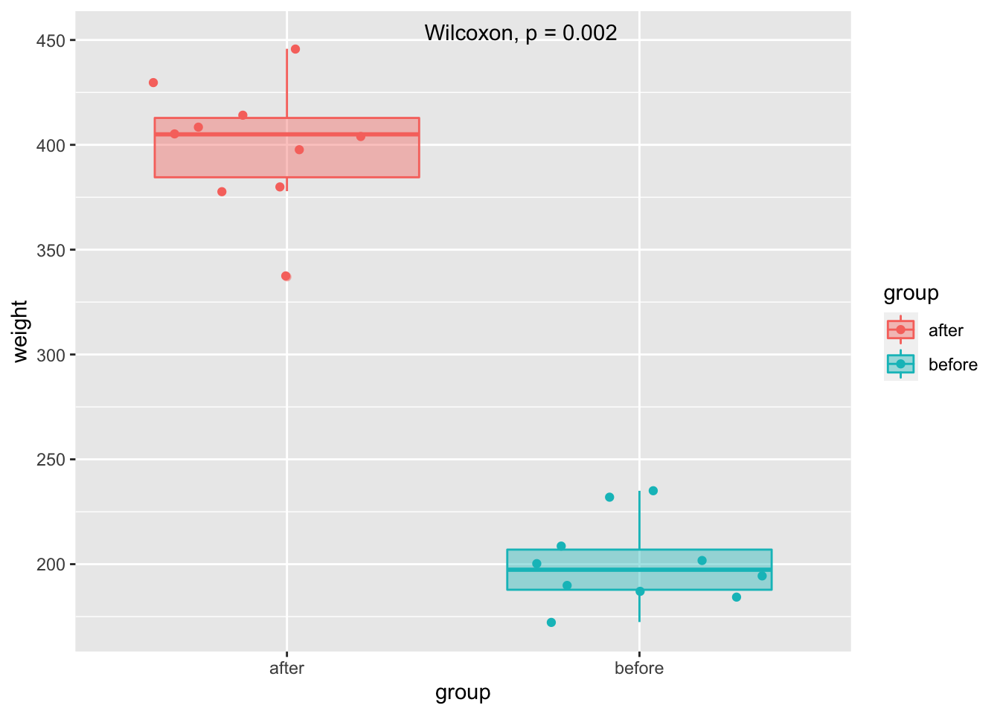
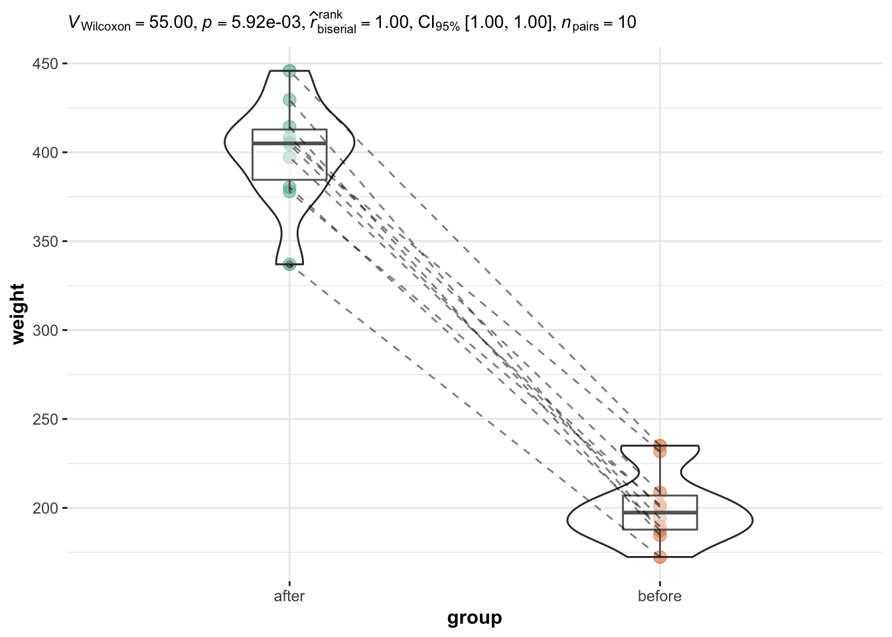

library(tidyverse)
library(rstatix)
library(ggpubr)Wilcoxon Test
References:
Wilcoxon test in R: data novia
Wilcoxon test: stats and R
Introduction
The Wilcoxon test is a non-parametric test for comparing 2 groups
Less powerful than t-test, i.e., more likely to fail to reject the \(H_0\) that there is no difference.
Wilcoxon signed rank test on paired samples
Data
# Wide format
data("mice2", package = "datarium")
head(mice2, 3)
#> id before after
#> 1 1 187.2 429.5
#> 2 2 194.2 404.4
#> 3 3 231.7 405.6Transform to long
mice2.long <- mice2 %>%
gather(key = "group", value = "weight", before, after)
head(mice2.long, 3)
#> id group weight
#> 1 1 before 187.2
#> 2 2 before 194.2
#> 3 3 before 231.7Summary Stats
mice2.long %>%
group_by(group) %>%
get_summary_stats(weight, type = "median_iqr")
#> # A tibble: 2 × 5
#> group variable n median iqr
#> <chr> <chr> <dbl> <dbl> <dbl>
#> 1 after weight 10 405 28.3
#> 2 before weight 10 197. 19.2ggpaired(mice2.long, x = "group", y = "weight",
order = c("before", "after"),
ylab = "Weight", xlab = "Groups")
The test assumes that differences between paired samples should be distributed symmetrically around the median.
mice2d <- mice2 %>%
mutate(differences = after - before)
gghistogram(mice2d, x = "differences", y = "..density..",
fill = "steelblue",bins = 5, add_density = TRUE)
Computation
wilcox.test(weight ~ group, data = mice2.long, paired = TRUE)
#>
#> Wilcoxon signed rank exact test
#>
#> data: weight by group
#> V = 55, p-value = 0.001953
#> alternative hypothesis: true location shift is not equal to 0Or
stat.test <- mice2.long %>%
wilcox_test(weight ~ group, paired = TRUE) %>%
add_significance()
stat.test
#> # A tibble: 1 × 8
#> .y. group1 group2 n1 n2 statistic p p.signif
#> * <chr> <chr> <chr> <int> <int> <dbl> <dbl> <chr>
#> 1 weight after before 10 10 55 0.00195 **Effect size
mice2.long %>%
wilcox_effsize(weight ~ group, paired = TRUE)
#> # A tibble: 1 × 7
#> .y. group1 group2 effsize n1 n2 magnitude
#> * <chr> <chr> <chr> <dbl> <int> <int> <ord>
#> 1 weight after before 0.886 10 10 largeViz ggplot2
mice2.long %>%
ggplot(aes(group, weight, color = group, fill = group)) +
geom_boxplot(alpha = 0.4) +
geom_jitter() +
ggpubr::stat_compare_means(method = "wilcox.test",
paired = TRUE,
label.x = 1.5,
label.y = 450,
show.legend = F)
Viz: {ggstatsplot}
library(ggstatsplot)set.seed(123) # Seed for bootstraped CI
ggwithinstats( # paired samples
data = mice2.long,
x = group,
y = weight,
type = "nonparametric", # for wilcoxon
centrality.plotting = FALSE # remove median
)